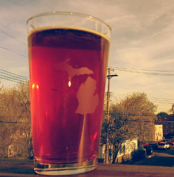

welcome,
You have seen these beers at your local grocery store or favorite watering hole. You have heard about these beers from Michigan. You have wanted to try something new. You just don't know where to go, or what to get when you get there. This site is here to help you. Check out below to see what's "On Tap". This area has news and happenings of the Michigan beer scene. Check out Beer 101 for a crash course in the styles and some terminology of micro beers. A quick stop over to the Breweries page will help you find a brew pub near you. Check out the Festivals page once you are ready to expand your palate, and want to sample some Michigan beers outside your area. Did we miss a festival? Did we miss your favorite Michigan brewery? Do you just want to tell us about a good beer you tried? Make sure we hear about it on the Contact Us page.
mi brew news
06.18.2013 -- This video called "Beer People" is a short 20 minute documentary about the Michigan craft beer movement. A winner of "Best Documentary" at U of M's Lightworks Film Festival Fall back in 2011. A very good video to get an inside look behind the curtain of the magic.
06.16.2013 -- The website Mitten Brew just celebrated their third anniversary online. To commemorate this accomplishment they released a beer with Saugatuck Brewing Co. called "Mitten Brew". This beer is a wheat beer and you can find it at several bars around the state in Traverse City, East Lansing, and Grand Rapids. Make sure to try it out and visit their site!
05.22.2013 -- Check out this wonderful article from the Detroit Free Press called Cheers to Michigan beers written by Annie Kelley. She does a great job summing up some of the best of the 102 craft breweries in the state.